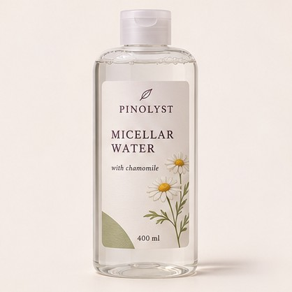
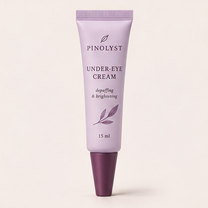
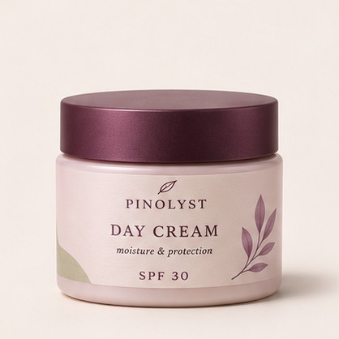

На один ранок чи вечір кожен бере різний набір засобів. Почніть зі звичних, а потім звірте на етикетці порядок нанесення.
Нижче зібрано п’ять прикладів із каталогу. Відкрийте картку, щоб побачити текстуру та призначення.

Рідкий засіб для зняття макіяжу.
Флакон із помпою та пінною текстурою.
Гелева текстура та піпетка для дозування.

Компактна упаковка на 15 мл.

Денний крем із позначкою SPF 30.
Обирайте креми з оліями та сечовиною, умивайтеся теплою, а не гарячою водою, і не пропускайте вечірній крем.
Легкі гелеві текстури, ніацинамід і м'яке очищення двічі на день. Не пересушуйте шкіру спиртовими тоніками.
Мінімум кроків і засоби без ароматизаторів. Будь-яку новинку спершу тестуйте на зап'ясті.
Легкий крем на все обличчя й матуючі засоби лише на Т-зону.